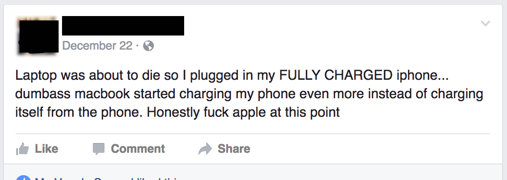

Why would you expect power to be transferred from your phone to the MacBook? A phone isn't a power outlet. However, you can share power
to
your phone, so that's handy. But if you had a charging wire, just use an outlet..